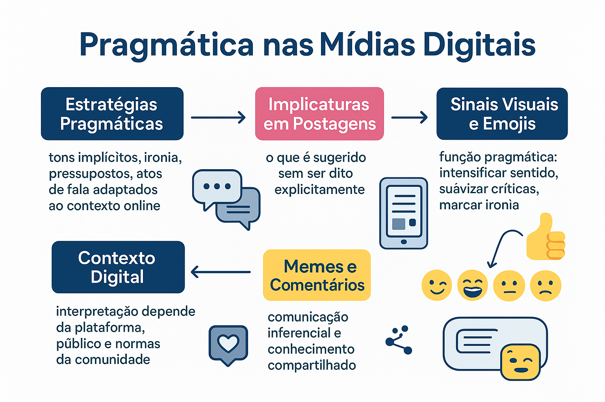

Pragmática em Discursos Midiáticos e Redes Sociais
No século XXI, a experiência comunicativa da humanidade foi radicalmente reconfigurada pela ascensão das plataformas digitais e das redes sociais (como X/Twitter, Instagram, TikTok, WhatsApp e YouTube). Se a linguística clássica nasceu observando a voz humana presencial ou os textos tipográficos lineares, hoje interagimos em ecossistemas de alta velocidade, hiperconectividade e extrema multimodalidade. Em uma fração de segundo, uma postagem de poucos caracteres, acompanhada de um meme sarcástico e dois emojis aparentemente ingênuos, é capaz de derrubar reputações, mobilizar multidões em protestos de rua ou definir os rumos de um debate eleitoral. A disciplina indispensável para decifrar a arquitetura invisível dessa nova ágora pública é a Pragmática Digital.
A comunicação mediada por computador (CMC) não se resume a uma troca mecânica de bytes ou caracteres: ela é um espaço de negociação inferencial contínua. Como demonstram os estudos pioneiros de David Crystal (2011), Gretchen McCulloch (2019), Limor Shifman (2014) e Raquel Recuero (2018), os elementos visuais e fragmentários da internet — como figurinhas, prints, hashtags, emojis e memes recombinantes — operam como sofisticados atos de fala multimodais. Eles cumprem o papel que a prosódia, a respiração, a cinésica corporal e as expressões faciais exerciam na conversa presencial face a face.
Nas diretrizes da Base Nacional Comum Curricular (BNCC), na Matriz de Linguagens do ENEM e nos vestibulares das principais universidades públicas (como PAES UEMA e Fuvest), o domínio da pragmática digital e do letramento midiático crítico é o alicerce fundamental para blindar o cidadão contra a desinformação, identificar manobras de polarização algorítmica e compreender a complexa linguagem das redes contemporâneas.
Neste artigo acadêmico completo, você explorará os novos regimes de enunciação da Pragmática Digital, o funcionamento das implicaturas em posts curtos, o estatuto dos emojis como gestos digitais segundo McCulloch, a teoria sociocognitiva dos memes de Limor Shifman, o fenômeno do colapso de contexto, roteiro metodológico de análise de redes, exemplos práticos comentados, questões oficiais resolvidas e sínteses teóricas.

A Pragmática Digital: novos regimes de enunciação e hiperconectividade
A transição do texto impresso tradicional para a comunicação em rede alterou estruturalmente as coordenadas do Origo Dêitico (o centro EU-AQUI-AGORA). Na conversação presencial, os participantes partilham o mesmo espaço físico e tempo cronológico; na internet, a enunciação opera sob o regime da assincronia quase-síncrona, na qual a autoria se fragmenta e a recepção é pulverizada em audiências invisíveis.
O linguista britânico David Crystal, em sua obra clássica Language and the Internet (2011), defendeu que a linguagem digital não constitui uma "degradação da norma culta" promovida pelos jovens, mas o nascimento de uma autêntica terceira modalidade da língua: o Netlíngua (ou Netspeak). Trata-se de uma modalidade híbrida que combina a espontaneidade, o imediatismo e a informalidade da fala com a permanência física e o registro visual da escrita.
A linguagem da internet como revolução expressiva
“A internet não está destruindo a linguagem; está expandindo o repertório expressivo da humanidade de maneiras nunca antes testemunhadas. Longe de ser um dialeto preguiçoso de abreviações caóticas, a comunicação online é profundamente sofisticada em termos pragmáticos, exigindo que os usuários naveguem por camadas simultâneas de texto, imagem, intertextualidade e timing contextual” (CRYSTAL, 2011, p. 19; RECUERO, 2018).
Implicaturas, entrelinhas e a economia do espaço em tweets e posts
Plataformas de microblogging (como o X/Twitter) e aplicativos de vídeo curto (como TikTok e Reels) impõem limites severos de caracteres e tempo de tela. Sob essa coerção de brevidade, a cooperação informacional de Paul Grice é levada ao limite extremo: os usuários dizem o mínimo indispensável na superfície verbal e confiam que seus seguidores deduzirão o restante através de implicaturas conversacionais particularizadas de alta densidade.
Comunicação Face a Face Tradicional
• Presença física e sincrônica dos corpos no mesmo espaço.
• Pistas vocais e cinésicas (tom de voz, pausas, olhar, gestos).
• Contexto fechado, delimitado e mutuamente observável.
• Réplica e correção imediata de mal-entendidos.
Comunicação Digital em Redes Sociais
• Assincronia espacial e temporal mediada por interfaces digitais.
• Pistas substituídas por recursos multimodais (emojis, pontuação, GIFs).
• Colapso de contexto: audiência massiva, híbrida e indeterminada.
• Permanência discursiva (o print como prova indelével).
A estratégia do "Apito de Cachorro" (Dog Whistle) nas Redes
Uma das manifestações pragmáticas mais poderosas na política digital contemporânea é a técnica do apito de cachorro (dog whistle). Inspirada nos apitos ultrassônicos audíveis apenas por cães, essa estratégia consiste em publicar uma mensagem cujo conteúdo posto literal é aparentemente neutro e inofensivo para o público geral, mas que carrega uma implicatura ideológica codificada reconhecida instantaneamente por grupos radicais ou comunidades sectárias:
- O político não profere a ofensa explícita (evitando processos jurídicos ou banimento por termos de uso da plataforma);
- Contudo, a militância radical decodifica as palavras-código e os símbolos visuais específicos, consumando o ato perlocucionário de mobilização e ódio velado.
Emojis e símbolos gráficos: os "gestos digitais" de Gretchen McCulloch
Em seu aclamado livro Because Internet: Understanding the New Rules of Language (2019), a linguista canadense Gretchen McCulloch desmantelou o preconceito de que emojis seriam uma regressão aos hieróglifos pré-históricos. McCulloch comprovou que os emojis cumprem na escrita digital exatamente a mesma função que os gestos corporais e a prosódia exercem na fala presencial:
Emojis como gestos da escrita segundo Gretchen McCulloch
“Quando conversamos pessoalmente, não mexemos os braços nem sorrimos porque nos faltam palavras: gesticulamos para ilustrar o tom, marcar o ritmo e orientar a simpatia do ouvinte. Os emojis são os equivalentes digitais desses gestos corporais na ponta dos dedos. Eles não substituem as palavras do dicionário: eles vestem a frase com uma atitude enunciativa e uma temperatura emocional” (McCULLOCH, 2019, p. 158).
Na perspectiva dos Atos de Fala de John Searle, os emojis atuam como indicadores de força ilocucionária e moduladores de polidez:
| Recurso Digital | Função Pragmática Central | Mecanismo Ilucucionário | Impacto no Gerenciamento da Face | Exemplo Típico |
|---|---|---|---|---|
| Emoji Mitigador (😊, 🙏, ☕) | Atenuar ordens e solicitações em meio corporativo | Converte ato diretivo impositivo em pedido cortês | Preserva a face negativa do interlocutor | “Precisamos fechar esse relatório até o meio-dia, combinado? 🙏” |
| Emoji Irônico / Crítico (🤡, 💅, 💀) | Demarcar escárnio, dissociação e julgamento moral | Quebra ostensiva da qualidade (menção ecoica de escárnio) | Agressão deliberada à face positiva da vítima | “Disse que não ia mais gastar dinheiro com compras 🤡” |
| Ponto Final Isolado (.) | Sinalizar frieza, distanciamento formal ou término hostil | Ruptura do pacto de polidez positiva informal | Gera inferência de irritação ou descontentamento | “Ok.” (em resposta a uma justificativa de atraso) |
| Caixa Alta Total (CAPS LOCK) | Simular grito, euforia emotiva ou agressão verbal | Intensificador perlocucionário de volume prosódico | Ameaça à face (agressão) ou comunhão empática | “EU NÃO ACREDITO QUE ISSO ACONTECEU!” |
| Captura de Tela (Print / Screenshot) | Atuar como prova jurídica ou índice testemunhal factual | Ato assertivo documental de verificação forense | Desmascarar contradições e desarmar dissimulações | “Segue o print da conversa do ano passado provando o contrário.” |
Multimodalidade e Memes: atos de fala multimodais em rede
A pesquisadora israelense Limor Shifman, em sua obra seminal Memes in Digital Culture (2014), redefiniu o conceito de meme para além da biologia evolutiva de Richard Dawkins. No espaço digital, um meme é um grupo de itens digitais que compartilham características comuns de conteúdo, forma e postura, criados com consciência mútua e circulados, imitados e transformados por múltiplos usuários da internet.
Sob o prisma da Pragmática, os memes representam a forma mais acabada de ato de fala multimodal:
- A Gramática do Design Visual: conforme postulado por Gunther Kress e Theo van Leeuwen (2006), o sentido não reside isoladamente nem na imagem nem na legenda verbal, mas no choque semiótico entre ambos;
- A Intertextualidade Obrigatória: um meme só tem êxito perlocucionário (despertar o riso ou a adesão política) se o receptor possuir na memória o template original e as centenas de variações prévias daquele formato;
- A Efemeridade dos Scripts: um meme sobrevive por semanas ou dias: à medida que o evento político ou cultural que lhe deu origem se dissipa, a implicatura perde sua calculabilidade, tornando o texto opaco para as gerações futuras.
O colapso de contexto nas redes sociais (danah boyd)
Na vida presencial, nós segmentamos nossas conversas: falamos de um modo com nossos pais na sala de estar, de outro com nossos chefes no escritório e de forma completamente distinta com amigos no bar. Nas redes sociais abertas, contudo, ocorre o chamado colapso de contexto (termo cunhado pela pesquisadora danah boyd): todas essas audiências divergentes são fundidas em um único feed indiferenciado. Uma piada irônica concebida para o círculo íntimo de pares pode ser lida literalmente por familiares conservadores ou empregadores, resultando em demissões sumárias e crises reputacionais devastadoras.
Roteiro metodológico: como analisar a pragmática de discursos nas redes
Para estudantes de Letras, jornalistas e pesquisadores das mídias digitais, a dissecação pragmática de qualquer interação online deve obedecer ao seguinte fluxo analítico:
Passo a Passo da Análise Pragmático-Digital
- Mapeamento da plataforma e das coerções de interface: identificar a rede (X, Instagram, WhatsApp) e como suas regras materiais (limite de texto, suporte a vídeo, algoritmos de entrega) moldam a mensagem;
- Análise do perfil do enunciador e da audiência presumida: averiguar o ethos construído pelo autor (figura pública oficial, perfil anônimo, criador de conteúdo) e os públicos que compõem o feed;
- Decodificação da arquitetura multimodal: analisar a relação entre o texto verbal escrito, a imagem de apoio, o som e as hashtags anexadas;
- Inspeção dos marcadores ilocucionários digitais: rastrear o emprego de emojis, quebras de pontuação padrão, gírias da internet e caixas altas;
- Rastreamento do Common Ground e das implicaturas: explicitar quais eventos de atualidade ou repertórios culturais prévios o leitor precisa conhecer para não ler a postagem de forma puramente literal;
- Diagnóstico de fenômenos discursivos críticos: categorizar se a publicação mobilizou ironia online, sarcasmo hostil, estratégia de apito de cachorro ou desinformação planejada.
Exemplos práticos de análise empírica aplicada
Caso 1: O tweet viral com imagem reativa
Postagem no X (Twitter):
Texto verbal: “Minha estabilidade emocional diante dos boletos deste mês está simplesmente impecável.”
Imagem anexada: A famosa foto do cachorrinho de desenho animado sentado tranquilamente em uma mesa de café enquanto a sala ao seu redor arde em chamas consumidoras (o meme clássico “This is Fine”).
Análise Pragmático-Multimodal:
1. Nível Semântico-Literal Isolado: A frase escrita afirma serenidade e equilíbrio financeiro pleno;
2. Contradição Multimodal: A imagem do meme desmente com violência gráfica a serenidade do texto verbal: a sala em chamas é a metáfora visual do desastre financeiro e do pânico iminente;
3. A Força Ilocucionária da Ironia: O usuário realiza uma quebra ostensiva da Máxima de Qualidade (Grice) através da menção ecoica de uma compostura que ele não possui, gerando cumplicidade afetiva e identificação empática instantânea com milhares de outros seguidores que partilham das mesmas dificuldades materiais.
Caso 2: A cobrança corporativa no WhatsApp com emojis atenuadores
Mensagem: “Bom dia, equipe! Passando apenas para lembrar que a entrega da planilha era ontem às 18h 😊 Alguém precisa de ajuda para finalizar ainda hoje? 🙏☕”
Análise do Gerenciamento de Faces:
• Ato Ilocucionário Real: Trata-se de uma cobrança severa por descumprimento de prazo contratual (ato diretivo direto que ameaça gravemente a face positiva da equipe);
• O Papel dos Emojis como Gestos de Polidez: O emissor mobiliza estrategicamente o emoji sorridente (😊), as mãos postas em prece (🙏) e o café fumegante (☕) como atenuadores de face negativa. A função pragmática dessas marcas visuais é neutralizar a rispidez da repreensão, mantendo o clima de colaboração corporativa sem abrir mão da cobrança urgente de resultados.
Conclusão da análise empírica
A pragmática digital confirma que nas telas contemporâneas nenhum emoji é neutro e nenhum meme é ingênuo: ambos são a ponta visível de uma sofisticada engrenagem de negociação sociodiscursiva e intervenção ideológica contínua no mundo real.
Questões para estudo e reflexão
Questão 1
(Concurso Público / Comunicação Social e Linguística) De acordo com as formulações de Gretchen McCulloch (2019) a respeito da linguagem na era da internet, o papel dos emojis nas interações cotidianas das redes sociais assemelha-se primordialmente ao de:
- A) Um vocabulário pictográfico fechado destinado a substituir progressivamente o sistema alfabético da Língua Portuguesa.
- B) Marcadores gestuais e prosódicos digitais que orientam o tom da enunciação, modulam a força ilocucionária e esclarecem intenções comunicativas do falante.
- C) Símbolos estéticos puramente decorativos sem qualquer relevância para a construção do sentido pragmático.
- D) Instrumentos mecânicos de correção ortográfica desenvolvidos por sistemas operacionais de celulares.
Ver resposta comentada
Gabarito: B.
Resposta comentada: McCulloch demonstrou que os emojis funcionam como autênticos "gestos digitais". Na ausência de recursos vocais e corporais da fala presencial (como entonação, pausas, sorrisos e arqueamento de sobrancelhas), o internauta emprega os emojis como indicadores pragmáticos que sinalizam polidez, sarcasmo, afeto ou seriedade.
Questão 2
(PAES UEMA / Letras) Em postagens políticas no Instagram, é frequente que influenciadores publiquem capturas de tela (prints) de declarações feitas anos atrás por adversários, acompanhadas unicamente do emoji de um balde de pipoca (🍿) ou de olhos atentos (👀). Sob o prisma da Pragmática, analise como o sentido e o ato de fala dessa postagem são construídos sem uma única palavra redigida.
Ver resposta comentada
Resposta comentada: A postagem estrutura-se como um ato de fala multimodal puramente inferencial. O print atua como prova documental factual (ato assertivo de denúncia que comprova incoerência ou hipocrisia do adversário). Os emojis de pipoca ou olhos arregalados funcionam como marcadores ilocucionários de atitude contemplativa e zombeteira (o falante posiciona-se como mero espectador que assiste ao "espetáculo da vergonha alheia"). Confiando no conhecimento partilhado dos seguidores sobre a rivalidade entre as figuras públicas, o autor gera uma implicatura demolidora contra a reputação do alvo sem precisar redigir nenhuma acusação formal direta.
Questão 3
(ENEM / Linguagens, Códigos e suas Tecnologias) Uma empresa de calçados publicou em seu perfil oficial uma foto com o fundo totalmente preto contendo apenas os seguintes dizeres em letras brancas: “Quem avisa amigo é. Sexta-feira. Meia-noite. 50% OFF. Durma no ponto e chore depois.”. A estratégia pragmática predominante utilizada para atrair o consumidor baseia-se:
- A) Na apresentação de um relatório técnico expositivo sobre os custos de fabricação dos calçados.
- B) Na quebra da máxima de qualidade por apresentar dados estatísticos cientificamente comprovados.
- C) No emprego de atos de fala diretivos indiretos ancorados em expressões idiomáticas populares (“quem avisa amigo é”, “dormir no ponto”) para simular cumplicidade informal e gerar senso de urgência consumista.
- D) Na total ausência de recursos de persuasão verbal perante os internautas.
Ver resposta comentada
Gabarito: C.
Resposta comentada: A publicidade constrói proximidade através de polidez positiva simulada: a marca apropria-se do ditado popular de amizade ("quem avisa amigo é") para mascarar seu interesse comercial. A combinação de períodos curtos, estilo telegráfico e a gíria "dormir no ponto" impõe uma forte pressão psicológica (efeito perlocucionário de urgência) para que o leitor acesse a loja virtual no horário marcado.
Questão 4
(Exame Acadêmico / Pós-Graduação em Linguística) Explique o conceito de "colapso de contexto" (context collapse) teorizado por pesquisadores da cibercultura como danah boyd e Michael Wesch, relacionando-o à ocorrência frequente de cancelamentos e crises comunicativas nas redes sociais.
Ver resposta comentada
Resposta comentada: O colapso de contexto ocorre quando a arquitetura das redes sociais aglutina em um único espaço discursivo audiências com repertórios socioculturais, faixas etárias, valores morais e graus de intimidade profundamente heterogêneos. Na comunicação tradicional face a face, o falante calibra sua fala para um grupo específico. Na internet, uma postagem irônica ou piada cifrada formulada para um subgrupo cúmplice é extraída de sua ecologia enunciativa original e distribuída para públicos externos que não compartilham do mesmo common ground. O resultado é o fracasso do cálculo inferencial: a mensagem é consumida como declaração literal e ofensiva, deflagrando linchamentos virtuais e cancelamentos em massa.
Questão 5
(Vestibular Tradicional / Filosofia da Linguagem e Comunicação) Por que a linguista Limor Shifman (2014) afirma que a compreensão de um meme digital exige uma competência intertextual e enciclopédica muito mais intensa do que a leitura de um texto verbal clássico linear?
Ver resposta comentada
Resposta comentada: Porque os memes digitais não são entidades autônomas ou autossuficientes: eles sobrevivem e significam por meio de uma complexa rede de remix e variação sobre esquemas preexistentes. O texto verbal do meme costuma ser hiperconciso e elíptico, dependendo inteiramente da capacidade do internauta de reconhecer a cena de cinema, a foto da celebridade ou o fato político histórico evocado pela imagem para preencher as lacunas informativas. Se o leitor desconhece o repertório da cibercultura que originou aquele molde gráfico, a mensagem torna-se um enigma indecifrável, provando que o sentido do meme reside no pacto intertextual compartilhado em rede.
Resumo da Pragmática Digital e Redes Sociais
- A Pragmática Digital investiga a construção inferencial do sentido em interações mediadas por computador e redes sociais;
- David Crystal definiu a linguagem da internet (Netspeak) como uma terceira modalidade da língua, hibridizando a espontaneidade da fala com a permanência da escrita;
- A restrição de espaço e a brevidade das interfaces forçam o recurso sistemático a implicaturas conversacionais de alta densidade;
- Gretchen McCulloch conceituou os emojis como "gestos digitais" que substituem a prosódia e modulam a força ilocucionária e a polidez na escrita online;
- A pontuação textual na internet assume valor pragmático: o ponto final em mensagens curtas converteu-se em índice de frieza ou hostilidade;
- Limor Shifman definiu os memes como atos de fala multimodais que exigem intertextualidade compartilhada e repertórios socioculturais vivos;
- A técnica do apito de cachorro (dog whistle) utiliza implícitos codificados para mobilizar grupos radicais sem violar normas formais de moderação;
- O colapso de contexto (danah boyd) funde públicos heterogêneos em uma mesma audiência, multiplicando mal-entendidos e crises reputacionais nas redes;
- O letramento pragmático digital é competência basilar para o ENEM, para o combate à desinformação e para o exercício da cidadania contemporânea.
Perguntas frequentes sobre Pragmática Digital
O que é Pragmática Digital?
A Pragmática Digital é o ramo da Linguística que investiga como os sentidos são construídos, negociados e inferidos em interações mediadas por computador e plataformas de redes sociais, analisando como brevidade, velocidade, algoritmos e multimodalidade transformam a comunicação.
Qual é a função pragmática dos emojis na comunicação online?
Segundo Gretchen McCulloch, os emojis operam como "gestos digitais" e marcadores prosódicos. Eles substituem o tom de voz, o olhar e as expressões faciais da fala presencial, servindo para modular a força ilocucionária, atenuar ordens e críticas (polidez) ou sinalizar ironia.
Por que os memes são considerados "atos de fala multimodais"?
Porque os memes não são meras imagens com texto: eles realizam ações sociais deliberadas (criticar políticos, satirizar hábitos, celebrar identidades). Sua força pragmática resulta da integração indissociável entre texto, imagem, intertextualidade e o repertório cultural compartilhado.
O que é o "colapso de contexto" nas redes sociais?
Conceituado por danah boyd e Michael Wesch, é a fusão de públicos distintos (família, chefes de trabalho, amigos íntimos e desconhecidos) em uma mesma audiência pública digital, tornando mensagens direcionadas vulneráveis a descontextualizações e cancelamentos.
Como operam as implicaturas em plataformas de microblogging como o X (Twitter)?
A limitação de caracteres e o dinamismo da plataforma forçam uma extrema economia linguística: os usuários verbalizam o mínimo explícito e confiam que seus seguidores mobilizarão o conhecimento enciclopédico de eventos recentes para inferir críticas veladas e ironias.
O que é a "metáfora do apito de cachorro" (dog whistle) na pragmática digital?
É uma estratégia de implicatura discursiva na qual um enunciado possui um sentido explícito perfeitamente inofensivo para o público geral, mas carrega uma mensagem codificada subliminar decifrável unicamente por um grupo político ou ideológico de convertidos.
Como a pontuação textual altera o sentido pragmático em mensagens instantâneas?
Na comunicação digital jovem informal (WhatsApp), o ponto final deixou de ser mera marca sintática e converteu-se em marcador de atitude: utilizá-lo em mensagens curtas ("Ok." ou "Sim.") é interpretado pragmaticamente como sinal de irritação, frieza ou encerramento ríspido da conversa.
Por que a Pragmática Digital é tão cobrada no ENEM e em vestibulares contemporâneos?
Porque os exames avaliam o letramento digital crítico dos estudantes, exigindo a habilidade de analisar memes, identificar o público-alvo de posts virais, desarmar manipulações de desinformação em prints e compreender a multimodalidade das linguagens contemporâneas.
Considerações finais
A Pragmática em discursos midiáticos e redes sociais desvenda a extraordinária metamorfose pela qual a linguagem humana passa no ecossistema digital. Longe de empobrecer a capacidade comunicativa dos sujeitos, as telas multiplicaram as camadas de sofisticação do discurso, transformando pequenos símbolos visuais em complexos enunciados e convertendo memes recombinantes na principal linguagem de contestação e coesão cultural das novas gerações.
Para estudantes de Letras, comunicadores digitais, educadores, jornalistas e cidadãos imersos no turbilhão da era dos algoritmos, compreender a mecânica dos sentidos nas redes não é apenas um requisito acadêmico: é a condição de sobrevivência crítica para decodificar os ruídos da esfera pública, preservar a empatia nas interações cotidianas e exercer uma presença digital consciente, ética e emancipada.
Conteúdos relacionados
- Introdução à Pragmática: o Estudo do Uso da Linguagem em Contexto
- Deixis: a linguagem que aponta para o contexto
- Teoria dos Atos de Fala: Austin, Searle e a Ação pela Linguagem
- Princípios da Comunicação: Cooperação, Máximas de Grice e Cortesia
- Inferência e Implicatura: o Sentido Além do Literal
- Pragmática e Gêneros Textuais: a Linguagem em Ação
- Pragmática Intercultural e Variação Pragmática
- Pragmática e Ironia: O Sentido nas Entrelinhas
- Pragmática e Ironia, Sarcasmo e Humor Pragmático
- Pragmática | Linguagem, Contexto e Construção de Sentidos — Índice Geral
Referências
- BOYD, danah. It’s Complicated: The Social Lives of Networked Teens. New Haven: Yale University Press, 2014.
- CRYSTAL, David. Language and the Internet. 2. ed. Cambridge: Cambridge University Press, 2011.
- GRICE, Herbert Paul. Logic and Conversation. In: COLE, Peter; MORGAN, Jerry (ed.). Syntax and Semantics: Speech Acts. New York: Academic Press, 1975. v. 3, p. 41-58.
- KRESS, Gunther; VAN LEEUWEN, Theo. Reading Images: The Grammar of Visual Design. 2. ed. London: Routledge, 2006.
- MCCULLOCH, Gretchen. Because Internet: Understanding the New Rules of Language. New York: Riverhead Books, 2019.
- RECUERO, Raquel. Redes sociais na internet. 3. ed. Porto Alegre: Sulina, 2018.
- SHIFMAN, Limor. Memes in Digital Culture. Cambridge: MIT Press, 2014.
- SPERBER, Dan; WILSON, Deirdre. Irony and the use-mention distinction. In: COLE, Peter (ed.). Radical Pragmatics. New York: Academic Press, 1981. p. 295-318.
Explore Outros Conteúdos
Continue seus estudos acessando outras seções do site Mestre Kira: